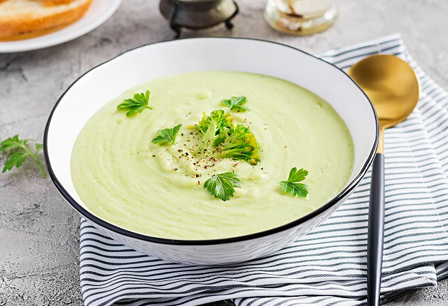

SOPA DE FOLHAS E TALOS 💚

INGREDIENTES
1 xícara (chá) de talos bem lavados
2 batatas picadas
1 cenoura picada
1 xícara (chá) de caldo de carne
1 1/2 litro de água
Temperos e sal a gosto
MODO DE PREPARO
Pique bem os talos ou bata-os no liquidificador com um pouco de água.
Em uma panela, coloque os talos, os outros ingredientes e leve ao fogo para cozinhar até os legumes ficarem macios.
Prepare esta receita com talos de acelga, couve, folhas de beterraba, cenoura, nabo, rabanete, etc.